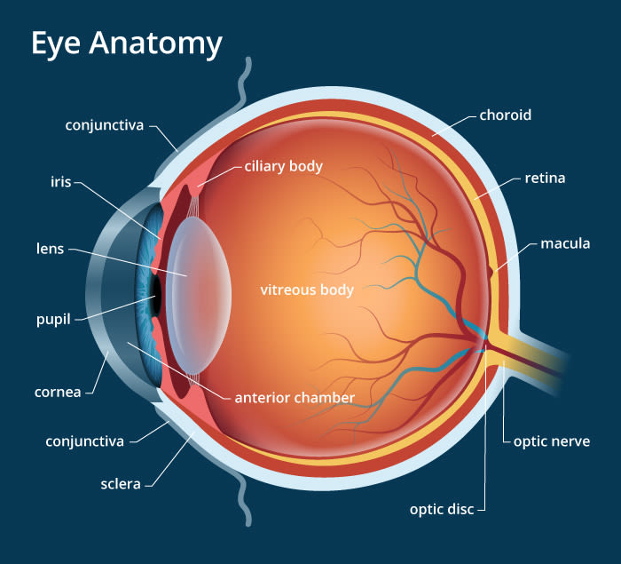

Eye Defects, Its Symptoms, Causes, and Remedy
The Human Eye
The human eye is an oval shaped organ or globe, which is between half an inch and can sometimes grow a little above an inch in diameter, and enables us to see. It is simply an organ of sight. Defective vision is the usual health problem almost all the people are suffering from nowadays in one way or other. Along with other important body parts, our eyes also play a Vital Role in describing our Personality and Confidence. Suffering from eye defect may also sometimes lead to lack of Self Confidence.
Of course, who loves wearing glasses at a growing age? None, and to hide the defect, people prefer using lenses instead of spectacles. You should consider your eyesight as one of your most valuable organ in your body, and maintaining its health should be of great concern to you. But, have you ever thought deeply about your eye defect? Do you know about the factors leading to defective eye? There are three fundamental types of eye problems.Below are lists of common problems associated with the human eye.
Common Eye Defects or Problems
- Cataracts
- Hypermopia
- Astigmatism
- Myopia
- Presbyopia
- Dry eyes
- Tearing
- Floaters
- Aberrations
CATARACTS: This condition is characterized by its cloudy vision. The eye seems to be covered by a milky white cloud. It is a condition that is very common with people of ages from 45 years and above, and can be of any gender. The main symptom is blurry vision. This is like looking through a cloudy or milky colored window. Cataracts can be caused by direct or indirect injury to the eye, exposure to too much light, or the reduction of protein in the body over time. Treatments: Use of corrective Lens, Surgery, and Supplement.
HYPERMOPIA: This condition is commonly referred to as "farsightedness". This condition reduce the ability to focus on near objects. It is an abnormal condition in which visions for distant objects are better than near objects. If reading close up materials becomes blury and are only better read distanced away from the eye, then you can be said to be farsighted. Often times, farsightedness is caused by a cornea that is not curved enough. This condition can be inherited from parents. Treatments: Use of corrective Lens, Surgery, and Supplement.
ASTIGMATISM: This is a defect in an optical system in which light rays from a single point fail to converge in a single focal point. This is a problem that is caused by the curve of your cornea. If you have it, your eye can’t focus light onto the retina the way it should. In this case, all the light rays don’t come on the single focus point of retina. Some rays fall on retina while the others fall in front of retina or behind it. In this type of eye defect, you will not be able to see anything clearly. Treatments: Corrective lenses, Laser Surgery, and Supplement.
DRY-EYES: This is a condition in which the tear gland produces little or quantity of tears which then result in low humidity of the eyes. This condition is a very rare and critical condition but it can be treated and corrected if reported to an ophthalmologist on time. Some symptoms associated with this condition include but not limited to burning, itching, frequent blinking of the eye-lid, and so on. Dry-eyes can be very uncomfortable. Treatments: Eye drops, Surgery, and Supplement.
MYOPIA: This condition is commonly referred to as "nearsightedness". It is an abnormality resulting from the eye's faulty refractive ability; distant objects appear blurred. This condition reduce the ability to focus on far objects. It is an abnormal condition in which visions for close objects are better than far objects. If reading or focusing on far away materials or objects becomes blury and are only better read close up to the eye, then you can be said to be nearsighted. Treatments: Use of corrective Lens, Surgery, and Supplement.
PRESBYOPIA: This condition is often mistaken for farsightedness but are of distinct causes and slightly similar symptom. Presbyopia is the gradual loss of the ability to clearly see close objects or small print due to aging of the eyes. It occurs when the eye natural lens loses flexibility, while the natural shape of the eyeball is a factor for farsightedness occurence, and it causes light rays entering into the eye to bend incorrectly once they have entered the eye.Treatments: Corrective lenses, refractive Surgery, and Supplement.
TEARING: This is the exact opposite of dry-eyes condition of the eyes. In this condition, the tear gland produces too much quantity of tears resulting to free or quick running of tears out of the eyes with little or no cause. This condition is mostly caused by too much sensitivity of the eyes to change to either light, temperature, wind, and touch. Eye infections may also be a major cause to tearing. Treatments: Lenses (to help reduce wind, touches, and light), Surgery, and Supplement.
FLOATERS: This condition is commonly known with people with ages varying from 50 years and above. The term floater is gotten from the symptom of the condition itself as tiny spots or specks floats across the field of vision of an individual. These specks are formed from the deposit of protein floating about in the anterior chamber of the eyes. This specks do not block vision, only floats around in the eyes. Treatments: Surgery, and Supplement.
ABERRATIONS: This condition is sometimes called Higher-order Vision Defects: a synonym for error. In this condition, light rays are focused mistakenly so that they don’t form a clear picture. Aberration are noticeable at night, and light reaches the retina with less focus. Under these conditions, vision can become much worse and/or the individual is more susceptible to glare.Treatments: Laser Surgery, and Supplement.
If you will like to read more on the uses and effect of using lenses, Click Here and you will be directed to "MCPHERSON OPTOMETRY" webpage.
Eye Defects Treatments
There are but few common treatment to any sight defect and they are surgery, using corrective lenses and using supplements. These three are the most common and effective ways of treating eye defects. Of these means, one is known to be cheapest and more effective means, and this is the use of supplements. Supplements are natural remedies that has been packaged into friendly and easy to use Forms.
One of the most effective products known to have been able to bring significant treatment to eye defect is this Theraphy I am introducing to you now. Many who have tried using this supplements came back with a lot of good testimonies about how they were relieved and how their health has really improved. I will be sharing some of these testimonies below.
Few Testimonials
Testimony 1: “Hello, I have started using the Natural Solution to Eye Defect around a month ago and went to do an eye test just this morning. My optician really couldn’t believe it! He was so surprised with my improvement that he said that he never saw anything like it. (Not without surgery at least!) I gave him your website address and he said that he is going to check it out and try it himself. Thank you for making this available to us!” Don Robert from Nairobi Kenya
Testimony 2: “Hi, would it be fine if we published this breakthrough on our website? We have still got so many sceptics and options telling me that it’s not possible to improve one’s vision, but hey, who cares, because my parents, wife and I have been using this product successfully and this proves that your Natural Solution to Eye Defect actually works! We will get there, as more and more people are improving their vision and talking about it. Thank you.” Uba Wisdom from Owerri Nigeria.
Testimony 3: “Hi! I want to give a personal testimonial and highly recommend your Natural Solution to Eye Defect for anyone that wants to improve their vision. I have been suffering from short-sightness since a very young age. I was considering laser surgery but it’s expensive and dangerous. Fortunately, after giving a try to this modest product, my vision improved to a degree that I hardly need to wear Spectacle anymore” Ifeoma from Utako Abuja Nigeria.
The Natural Herbal Capsule Supplement
This Natural Herbal Supplement is helping thousands of Men and Women to see Clearly and Better without the need for their corrective lenses. Some of them literally throw away their glasses after a short while because it became of no use again to them. If you are suffering from any of the above eye conditions, then you would benefit
from what I have to show you. Whether you are wearing glasses already or your eyesight is getting worse and you think you may need glasses now or in the future. Information is power and can be more powerful than medicine at times, but it's only if you really make use of it. To every problem, there is always a solution.
Nothing is more painful than a missed privilege that brings healing and freedom from series of health challenges. Your eyes defect is a wake-up call for you to discover a new insight that will add to your wealth of knowledge and walk you out of any of the above eyes defects.
THE PERFECT NATURAL COMBINATION FOR BETTER VISION
What it Does
- Maintain Optical Clarity
- Prevent Ocular Toxicity
- Improve and Increases Visual Acuity
- Improve Blood Circulation to the Eye
- Nourishes the eye with all useful nutrients and improve Blurred Vision
- It corrects and cure Glaucoma, Cataract and Night Blindness
How Safe is This Solution?
The above products combination have the prestigious Kosher Seal (which makes them acceptable to the Jews). The Jews don’t take anything that isn’t 100% natural. As a fact, they don’t take bread with yeast! They believe in no
additives. It also have other seals which include: International Aloe Science Council seal, Halal (an Islamic medical) seals, and NAFDAC (Nigerian Food and Drug Council), these seals of highest form of purity.
Placing an order for Eye Defects Solution Pack?
Kindly fill out the form below to place your order

If your country is not on the list above, kindly contact us to let us know how we can get the product to you.